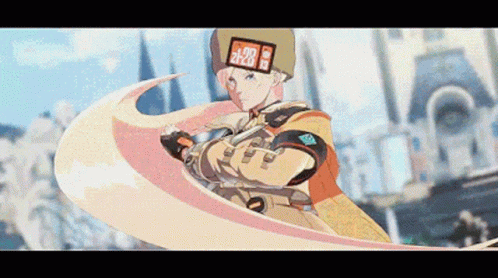

Born in Russia, she too was orphaned by the crusades and raised by the Assassin's Guild, like her eventual lover Zato-1. Like Zato-1, she would learn one of the guild's forbidden techniques and have the power to manipulate her hair as a weapon. Eventually, she feared her fate as a member of the guild and agreed to the International Federation Police to betray Zato-1 in exchange for her acquittal in being part of the guild. She would eventually have a final confrontation with Zato-1 as he died and Eddie took over, till his eventual death as well. She would then live a few years, finally free of the guild.
When Zato-1 and Eddie are revived by the conclave, she goes to investigate and finds Venom there too. The 3 reunite and all seems to be mostly peaceful between them after making amends years ago with Zato’s initial death. The three help fight against the Universal Will along with the others. She, alongside Zato-1, go to the White House to help aid against Happy Chaos. After the defeat of I-No and Happy Chaos, she joins Zato-1 to go visit the now-retired Venom at his bakery.
